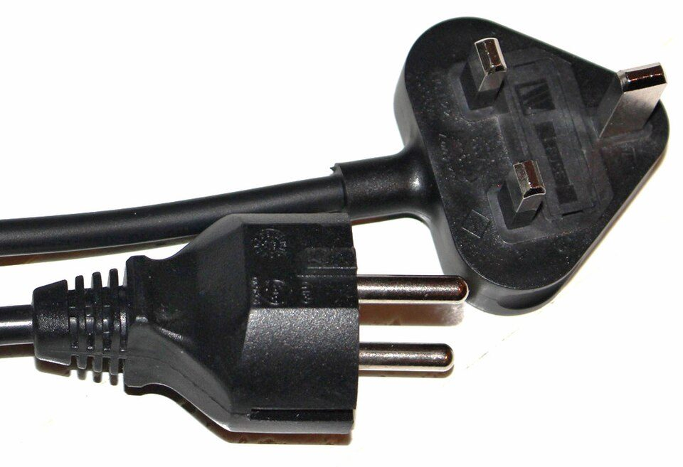
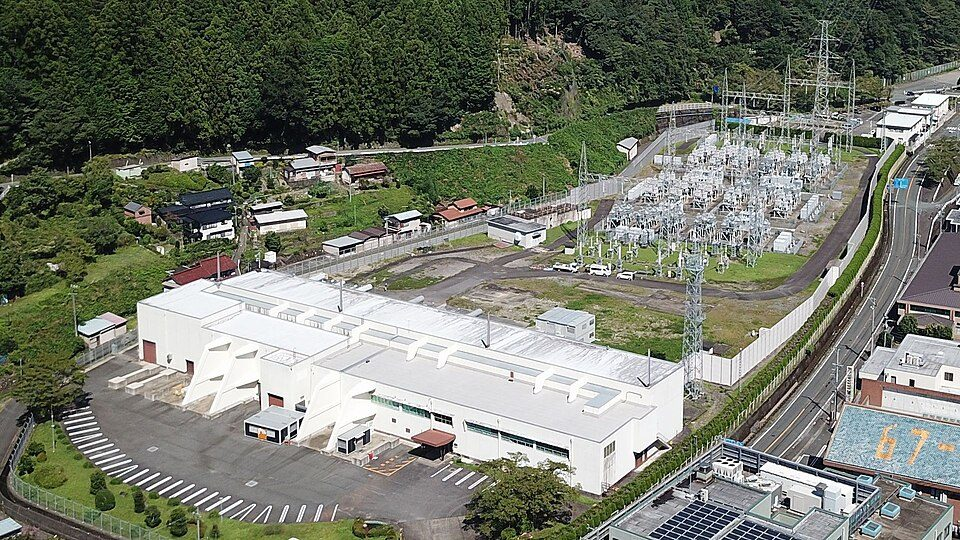
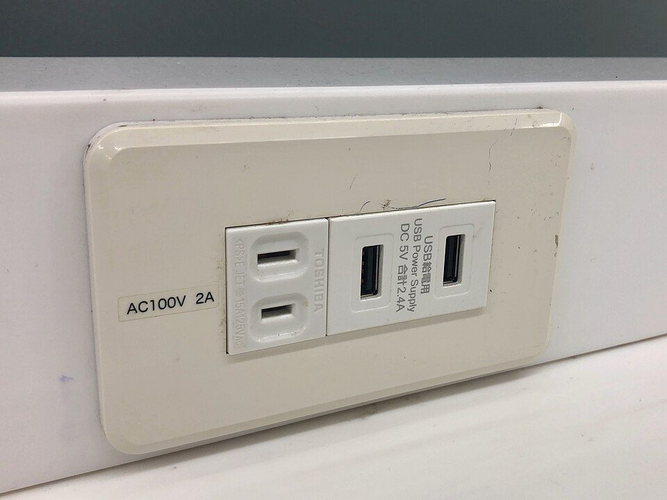

なぜ国によってコンセントの形が違う？ 電圧・周波数・プラグの違いと、海外で使うときの注意
要点まとめ
海外の旅行先で、日本から持っていった充電器のプラグが、コンセントに合わないことがあります。違うのは形だけではありません。電気を押し出す力を表す電圧（V）[6]や、交流の電気の周波数（Hz）も、国や地域によって違います。この記事では、なぜ違うのかを、IEC（国際電気標準会議）の説明や電力会社・電気事業連合会の資料でたどり、海外で日本の電気製品を使うときに知っておきたいことをまとめました。
国別の情報について
国ごとのプラグの型・電圧・周波数は、IECのウェブサイトのガイド「World Plugs」の表をもとにしています。このガイドは公開が終わっているため、2026年8月16日時点の保存版（Internet Archive）を使いました[1][7]。

コンセントの形が国ごとに違う理由
照明から始まり、家電の広まりとともに各国が決めた
当時は海外旅行が少なく、互換性は重視されなかった
IECは、家庭に電気が入った19世紀の終わりごろ、電気は主に照明に使われていたと説明しています[1]。20世紀の初めに家電が広まると、各国はそれぞれの事情に合わせて、独自のプラグとコンセントの仕組みをつくりました[1]。当時は海外旅行がまれで、ほかの国と合うかどうかは重視されなかったとしています[1]。形は違っても、各国の仕組みはIECの取り組みによって厳しい安全基準に沿っている、とも説明しています[1]。
世界共通をめざした国際規格もある
IEC 60906-1は、1986年に初版、2009年に第2版
IECは、家庭用のプラグとコンセントの国際的な仕組みとして「IEC 60906-1」を定めています。対象は、200〜250Vの電気で使う16A・250Vのプラグとコンセントで、100〜125Vで使う15A・125Vのものは対象外です[8]。2009年4月7日に発行された第2版は1986年の初版に代わるもので、穴にシャッター（異物が入らないようにするふた）を付けることが必須になりました[8][1]。ただし、この規格の形がどの国でどれだけ使われているかは、今回の調査では確認できませんでした。
一度広まった仕組みは、変えにくい
日本の周波数も、統一の話し合いはまとまらなかった
関西電力は、日本の電気の周波数について、約100年前から「どちらか1つに決めよう」と何度も話し合ったものの、うまくいかなかったと説明しています[9]。プラグの形も、すでに建物に付いているコンセントや、使われている電気製品をまとめて取り替えるのは難しいため、国ごとの違いが残っていると考えられます（筆者の見解）。
プラグの型はA〜Oの15種類
IECの「World Plugs」は、プラグの型をAからOまでのアルファベットで分けていました[1]。2026年8月16日時点の保存版の表には、216の国・地域が載っています（筆者が数えた数）[1]。
| 型 | 形の特徴 | 使われている地域の例 |
|---|---|---|
| A | 平たいピン2本。アース（接地）なし | 北米・中米、日本 |
| B | 平たいピン2本と丸いアースピン | 北米・中米、日本 |
| C | 丸いピン2本（ユーロプラグ） | イギリス・アイルランド・キプロス・マルタを除くヨーロッパ |
| D | 太い丸ピン3本が三角形に並ぶ | インド、スリランカ、ネパール、ナミビア |
| E | 丸いピン2本と、コンセント側のアースピンを受ける穴 | フランス、ベルギー、スロバキア、チュニジアなど |
| F | 丸いピン2本と、側面のアースの金具（シュコー） | ドイツ、オーストリア、オランダ、スペインなど |
| G | 長方形の刃3本が三角形に並ぶ。ヒューズ入り | イギリス、アイルランド、マレーシア、シンガポール、香港など |
| I | 平たいピン2本がV字（ハの字）に並び、アースピンが付く | オーストラリア、ニュージーランド、パプアニューギニア、アルゼンチン |
| L | 丸いピン2本の真ん中に、アースピンがある | イタリア |
| O | 丸いピン3本。2006年に設計された | タイ |
ほかに、H型（イスラエル）、J型（スイスなど）、K型（デンマークなど）、M型（南アフリカなど）、N型（ブラジル）があります[1]。
見方: 最も多くの国・地域で使われているのはC型で、日本と同じA型は53の国・地域でした（筆者の集計）。1つの国・地域で複数の型が使われていることも多く、例えばタイは、A・B・C・F・Oの5つの型が表に載っています[1]。
日本とアメリカのA型は、少しだけ違う
アメリカのプラグは、片方のピンの幅が広い
IECによると、日本とアメリカのA型は同じように見えますが、アメリカのプラグは中性側のピンがもう一方より幅が広く、日本のプラグは2本とも同じ大きさです[1]。そのため、日本のプラグはアメリカで使えますが、逆はできないことが多いとしています[1]。
C型（ユーロプラグ）は、多くのコンセントに入る
E・F・J・K・N型のコンセントでも使える
C型は丸いピンが2本のプラグで、直径4.0〜4.8mmの丸いピンを、中心の間隔19mmで受けるコンセントなら入るとIECは説明しています[1]。E・F・J・K・N型のコンセントでも問題なく使えますが、一般に2.5A以下の機器に限られます[1]。
イギリスのG型には、ヒューズが入っている
小さな機器は3A、ヒーターなどは13Aのヒューズ
G型は、長方形の刃3本が三角形に並んだプラグで、中にヒューズが入っています。パソコンなどの小さな機器には3A、ヒーターなどには13Aのヒューズが一般的です[1]。イギリスのコンセントは、異物が入らないよう、アース以外の2つの穴にシャッターが付いています[1]。
日本での呼び名と、IECの記号が違う型がある
日本で「BF」と呼ばれる型はG型、「O」はI型
関西電力は、日本で「タイプBF」と呼ばれることが多いコンセントの正式な名前は「タイプG」、オーストラリアなどの「タイプO」の正式な名前は「タイプI」だと説明しています[4]。変換アダプタを探すときは、表記に気をつけるよう呼びかけています[4]。IECの記号でO型と呼ぶのは、タイの別の型です[1]。
くわしく
- タイのO型は16Aの公式の規格で、2006年に設計され、少しずつ導入が進められている段階[1]
電圧と周波数も、国ごとに違う
| 国・地域 | 電圧 | 周波数 | プラグの型 |
|---|---|---|---|
| 日本 | 100V | 50Hz／60Hz | A・B |
| アメリカ | 120V | 60Hz | A・B |
| カナダ | 120V | 60Hz | A・B |
| グアム | 110V | 60Hz | A・B |
| メキシコ | 127V | 60Hz | A・B |
| 韓国 | 220V | 60Hz | C・F |
| 中国 | 220V | 50Hz | A・I |
| 台湾 | 110V | 60Hz | A・B |
| 香港 | 220V | 50Hz | D・G |
| タイ | 220V | 50Hz | A・B・C・F・O |
| ベトナム | 220V | 50Hz | A・B・C |
| フィリピン | 230V | 60Hz | A・B・C |
| シンガポール | 230V | 50Hz | C・G・M |
| マレーシア | 240V | 50Hz | A・C・G・M |
| インドネシア | 220V／110V | 50Hz | C・F |
| イギリス | 230V | 50Hz | G |
| フランス | 230V | 50Hz | C・E |
| ドイツ | 230V | 50Hz | C・F |
| イタリア | 230V | 50Hz | C・F・L |
| スペイン | 230V | 50Hz | C・F |
| スイス | 230V | 50Hz | C・J |
| オーストラリア | 230V | 50Hz | I |
| ニュージーランド | 230V | 50Hz | I |
| ブラジル | 127V／220V | 60Hz | C・N |
日本からの旅行先として身近な国・地域を中心に、筆者が選びました。IECは、この表を一般的な情報として示し、誤りや漏れに責任は負わないとしています[1]。
100Vは、IECの表では日本だけ
230Vが86、220Vが63の国・地域（筆者の集計）
IECの表（2026年8月時点）で、電圧が100Vなのは日本だけでした。最も多いのは230Vの86の国・地域で、220Vが63、240Vが21と続きます（筆者の集計。2つの電圧が書かれた国・地域は除く）[1]。アメリカやカナダは120V、台湾やグアムは110Vです[1]。
周波数は、50Hzの国・地域が多い
50Hzが171、60Hzが42。両方あるのは日本など3つ
同じ表で、周波数が50Hzの国・地域は171、60Hzは42、両方が書かれているのは日本・北朝鮮・リベリアの3つでした（筆者の集計）[1]。関西電力は、2つの周波数がある日本は世界でもめずらしく、ほとんどの国は50Hzか60Hzのどちらかに決まっていると説明しています[9]。
日本の50Hzと60Hz
境目は、静岡県の富士川と新潟県の糸魚川のあたり
東側は50Hz、西側は60Hz
中部電力によると、家庭用の電気は交流で、日本では静岡県の富士川と新潟県の糸魚川あたりを境に、東側は50ヘルツ、西側は60ヘルツの電気が送られています[3]。日本政府観光局も、名古屋・京都・大阪を含む西日本は60Hzだと案内しています[2]。
くわしく
- 境目の近くには、周波数が混ざっている地区があり、中部電力が一覧の確認先を示している[3]
始まりは、明治時代に輸入した発電機
東京はドイツ製の50Hz、大阪はアメリカ製の60Hz
電気事業連合会の年表によると、1895年に操業を始めた東京電灯の浅草発電所で使ったドイツのAEG製の発電機が50ヘルツだったことが、東日本の50ヘルツの始まりです[12]。1897年には大阪電灯がアメリカのGE製の発電機を増設し、これが60ヘルツだったので、西日本は60ヘルツになりました[12]。関西電力は、当時は発電機を外国から輸入しなければならず、東京にはドイツ製、大阪にはアメリカ製が入ったと説明しています[9]。その後、東京と大阪を中心に2つの周波数の電気がたくさんつくられ、全国に広がりました[9]。
- 1887年
東京電灯が、家庭への配電を始める
このときは210Vの直流だった[12]
- 1895年
東京電灯の浅草発電所が操業。ドイツのAEG製の発電機は50Hz
東日本の50Hzの始まり[12]
- 1897年
大阪電灯が、アメリカのGE製の60Hzの発電機を増設
西日本の60Hzの始まり[12]
- 1965年
佐久間周波数変換所が完成
初めて50Hzと60Hzがつながった[13]
- 2011年3月
東日本大震災。西から東へ電気を送るとき、変換設備の上限が制約に
当時の上限は3か所合わせて120万kW[14]
- 2016年6月
東京中部間の連系設備を増強する計画が決まる
- 2021年3月31日
飛騨信濃周波数変換設備が運用を始める
合計の容量が120万kWから210万kWに[17]
- 2026年5月22日
300万kWへの増強の完了時期について「2030年3月以降への変更を検討中」と報告
計画の完了予定は2027年度末[16]
- 2026年10月13日
佐久間周波数変換設備が「IEEE Milestone」に認定される
60年以上、東西の電力の融通を支えたと評価された[18]

東西で電気を送るには、周波数の変換が必要
交流をいったん直流にして、また交流に戻す
電気事業連合会は、東西の間で電気をやり取りするには、周波数を変換する必要があると説明しています[14]。そのために、交流の電気をいったん直流に変え、再び交流に戻す「サイリスタバルブ」という設備を使います[14]。佐久間周波数変換所（静岡県）は、世界初の電気事業用の周波数変換設備です[15]。
| 設備 | 容量 | メモ |
|---|---|---|
| 佐久間周波数変換所（静岡県） | 最大30万kW[15] | 1965年に完成[13]。30万kWから60万kWへの増強を計画中[15] |
| 新信濃変電所（長野県朝日村） | 60万kW（2020年2月時点）[14] | 東京電力パワーグリッドの設備[14] |
| 飛騨信濃周波数変換設備 | 90万kW[17] | 2021年3月31日に運用開始。新信濃変電所と飛騨変換所（岐阜県高山市）を、89kmの直流送電線で結ぶ[17][14] |
| 東清水周波数変換設備 | 容量を直接書いた公式の資料は見つからなかった | 中部電力パワーグリッドが増強工事を担当[16] |
300万kWへの増強は、完了が遅れる見込み
完了予定の「2027年度末」から変更を検討中
電力広域的運営推進機関の2026年5月22日の資料によると、東京中部間の連系設備を210万kWから300万kWへ増強する計画は、完了予定が2027年度末で、「2030年3月以降への変更を検討中」とされています（前回の報告では「2028年12月への変更を検討中」）[16]。佐久間周波数変換設備の工事で、用地の交渉が難しい場所の任意交渉が長引き、土地収用法の手続きを並行して進める必要があると判断されたためです[16]。
引っ越しのときは、周波数の表示を確かめる
どちらか一方の周波数でしか使えない製品もある
北陸電力は、電気製品には50Hzか60Hzのどちらかでしか使えないものや、周波数の切り替えが必要なものがあると説明しています[19]。関西電力は、「50／60Hz」と書いてあるものはどこでも使え、「50Hz」か「60Hz」としか書いていないものは、その周波数の地域でしか使えないとしています[9]。中部電力は、周波数の違いを確かめずに使うと、器具を傷めたり性能が落ちたりするだけでなく、火災の原因にもなりかねないとしています[3]。
日本のコンセントの決まり

日本は全国で100V、コンセントはA型
家庭では、一部で200Vも使われている
日本政府観光局は、日本の電圧は全国で100Vにそろっていて、コンセントはA型のプラグに合うものだと案内しています[2][20]。IECの表では、日本のプラグの型はA型とB型です[1]。北陸電力は、家庭に送る電気は通常100Vで、一部は200Vだと説明しています[19]。
200Vは、3本の電線の使い方で取り出す
「単相3線式」なら、100Vと200Vの両方が使える
東京電力パワーグリッドによると、「単相3線式」の配線では、真ん中の中性線と上か下の電圧線を使えば100V、上と下の電圧線を使えば200Vになります[21]。電線が2本の「単相2線式」では、100Vしか使えません[21]。関西電力は、単相200Vのコンセントはエアコンなど消費電力の大きい家電のためのもので、IHクッキングヒーターや食器洗い乾燥機などの利用が増えているとしています[4]。
100V用のコンセントは、左の穴が少し長い
長い方が「接地側」とパナソニックは説明している
パナソニックは、15A・100V用のコンセントは左の穴が右より2mm長く、電源の接地側（いわゆる中性線側）を左側につなぐよう義務付けられていると説明しています[22]。左側の極には、接地側を示す「W」（白の意味。電線の白い側が接地側）の表示も義務付けられているとしています[22]。200V用は2つとも電圧側なので、この区別はないとしています[22]。
日本で売る電気製品には、PSEマークなどの表示が必要
表示のない電気用品は、事業者が販売できない
経済産業省によると、電気用品安全法は、電気用品による危険や障害を防ぐための法律です[23]。電気用品の製造・輸入・販売の事業をする人は、PSEマークなどの表示が付いたものでなければ、販売したり、販売のために並べたりしてはいけません[23]。
海外で日本の電気製品を使うとき
変換プラグは、形を合わせるだけ
電圧を変えるのは、変圧器の役目
関西電力は、海外では日本とコンセントの形が違う場合があるので、プラグの形を合わせる変換アダプタ（変換プラグ）が必要になり、日本の電圧にしか対応していない製品を使いたい場合は、変換アダプタに加えて変圧器も必要になると説明しています[4]。IECの表で100Vは日本だけなので、ほかの国・地域の電圧はすべて日本より高くなります（筆者の集計）[1]。日本政府観光局も、日本に来る旅行者向けに、両方の電圧に対応したドライヤーや、旅行用のアイロン、シェーバーなどは日本のどこでも使えるが、それ以外は電圧を変える変圧器が必要だと案内しています[2]。
まず、機器が使える電圧を確かめる
海外向けの製品も、使う国の電圧を必ず確認
日本電機工業会は、電気ケトルの使用上の注意で、海外向けの製品は使う国や地域の電圧を必ず確かめるよう呼びかけ、電圧が違うまま使うと故障の原因になるとしています[5]。パナソニックは、海外・国内両用のドライヤーには、使う場所に合わせて電圧を切り替えるスイッチがあり、変圧器はいらないと説明しています[24]。
国内専用の100V製品は、海外で使わない
変圧器を使っても、故障の原因になる
ただし、日本電機工業会は、電気ケトルの使用上の注意として、「100V仕様の国内専用製品については、海外で使用しないでください」と呼びかけ、変圧器を使った場合も故障の原因になるとしています[5]。パナソニックも、国内用のドライヤー（AC100V仕様）は海外では使えず、変圧器を使っても電圧が不安定になる場合があり、故障や事故につながるおそれがあると説明しています[24]。
行き先のコンセントの型は、出発前に確かめる
IECは、アダプタのメーカーや旅行サイトでの確認をすすめる
IECの「World Plugs」は公開を終えていて、その案内では、行き先のプラグの型や電圧などは、旅行用アダプタのメーカーや信頼できる旅行サイトで確かめるようすすめています[7]。この記事の国別の表も、2026年8月時点の保存版の情報です[1]。
今回確認できなかった点
- 日本の家庭用の電気が100Vになった理由（電力会社・業界団体などの公式な説明は見つからなかった）
- ヨーロッパの国々の電圧が230Vにそろった年（IEC 60038の2009年版で、移行期間が終わったことだけを確認した）
- 国際規格IEC 60906-1の形が、どの国でどれだけ使われているか
- 日本のコンセントの形や寸法を定めたJIS C 8303の内容（規格の本文を確認できなかった）
- 東清水周波数変換設備の容量と、2026年5月より後の増強の完了時期
- 「100-240V」などの表示の読み方や、海外旅行での電気製品の使い方についての、国の機関や国民生活センターの説明
- IECの「World Plugs」が公開を終えた日（保存版から、2026年8月16日〜11月5日の間と分かる）
関連する記事
出典（24件）
閲覧日はいずれも2026年11月10日〜11日
- World plugs（保存版、2026年8月16日時点）（IEC（国際電気標準会議））
- Plugs & Electricity（日本政府観光局（JNTO））
- 地域と周波数（電気のマメ知識）（中部電力）
- コンセントの種類一覧｜形状や差し込み口の違い、海外との比較も画像付きで解説（関西電力（かんでんWITH YOU））
- 電気ケトル 使用上のご注意事項（日本電機工業会（JEMA））
- ボルト・アンペア・ワット（電気のマメ知識）（中部電力）
- World plugs（公開終了の表示。保存版、2026年11月5日時点）（IEC（国際電気標準会議））
- IEC 60906-1:2009（IEC Webstore）（IEC（国際電気標準会議））
- 教えて！かんでん なぜちがう周波数ができてしまったの？（関西電力）
- IEC 60038:2009 IEC standard voltages（IEC Webstore）（IEC（国際電気標準会議））
- IEC 60038 第7版 プレビュー（序文、PDF）（VDE Verlag（IEC規格のプレビュー））
- 電力事業の歴史 明治時代（1868〜1911年）（電気事業連合会）
- 電力事業の歴史 昭和後期-1（1946〜1969年）（電気事業連合会）
- Enelog vol.40 COVER PHOTO「緊急時に備え周波数変換設備を増設 〜新信濃変電所〜」（2020年2月）（電気事業連合会）
- 送変電事業について（電源開発送変電ネットワーク（J-POWER送変電））
- 広域系統整備計画の進捗状況について（2025年度第4四半期）第101回広域系統整備委員会 資料1（2026年5月22日、PDF）（電力広域的運営推進機関）
- 飛騨信濃周波数変換設備の運用開始について（2021年4月1日）（東京電力パワーグリッドほか一般送配電事業者9社・送配電網協議会）
- 佐久間周波数変換設備がIEEE Milestone認定されました（2026年10月13日）（電源開発送変電ネットワーク（J-POWER送変電））
- Frequencies（Guide on Electricity Use）（北陸電力）
- FAQ（What is the voltage and plug type used in Japan?）（日本政府観光局（JNTO））
- 単相3線式と単相2線式の違い（東京電力パワーグリッド）
- 電気の基本：コンセント（パナソニック）
- 電気用品安全法の概要（経済産業省）
- 海外で使えるヘアドライヤー・くるくるドライヤーは（よくあるご質問）（パナソニック）
写真・画像の出典（3件）
- イギリスのプラグ（上）と、ドイツ・フランス共通のプラグ（下）
写真: FF-UK／Wikimedia Commons（CC BY-SA 4.0） - 佐久間周波数変換所（静岡県。上空から）
写真: Jihara19／Wikimedia Commons（CC BY-SA 4.0） - 日本のコンセント（AC100V）とUSBの充電口
写真: KKPCW（Kyu3）／Wikimedia Commons（CC BY-SA 4.0）